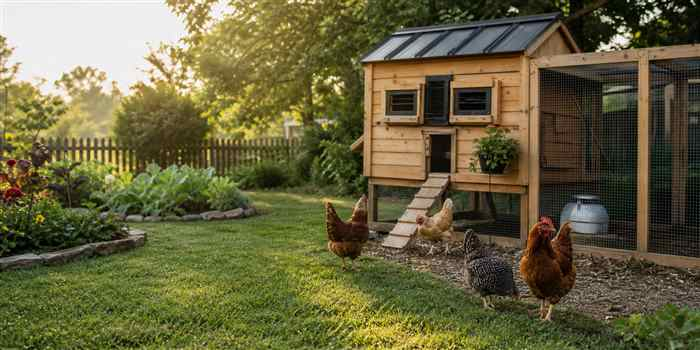

Check the rules before buying birds
Many cities limit flock size, ban roosters, set coop setbacks, or require permits. Start with your city and county.

Backyard chicken ownership, without the guesswork
Learn the basics, price out the starter gear, and find the local rules before you bring home your first hens.
Start here
Chickens are simple animals, but the setup matters. Your first decisions should protect the birds, keep neighbors happy, and make daily chores easy enough that you will actually do them.
Many cities limit flock size, ban roosters, set coop setbacks, or require permits. Start with your city and county.
Use hardware cloth, covered runs, shade, dry bedding, ventilation, and a coop that can be closed securely at night.
The coop is only one piece. Feed storage, waterers, bedding, grit, and nest box liners all matter.
Fresh water, feed, egg collection, quick health checks, and clean bedding should be reachable without a wrestling match.
Buying list
Start with the infrastructure list. The Convenience List is the easy Amazon route, and The Budget List will mix local sourcing with handy building for people who have more time than cash.
Disclosure: future product links may be affiliate links. The recommendation should still explain why an item is useful, what to compare, and when a cheaper option is good enough.
Build direction
This section is ready to become the budget-build heart of the site: salvage-friendly coop plans, local sourcing ideas, material lists, rough prices, tradeoffs, and what not to cheap out on.
Local rule finder
Enter a city, state, and optional county. The tool builds search links focused on official municipal, county, code-library, and agriculture-extension sources.
Good searches include “backyard chickens,” “hens,” “livestock,” “animals,” “fowl,” “setbacks,” and “permit.”